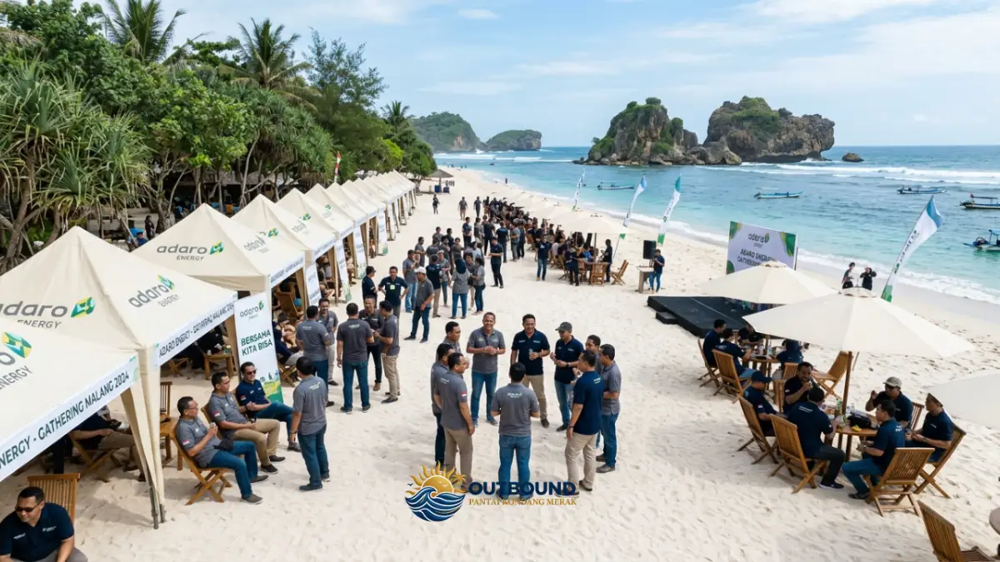

Memilih lokasi untuk Corporate Gathering bukanlah perkara mudah. Anda membutuhkan tempat yang tidak hanya indah secara visual, tetapi juga mendukung kelancaran seluruh kegiatan team building yang telah direncanakan oleh panitia maupun vendor penyelenggara.
Di kawasan Malang Selatan, nama Pantai Kondang Merak belakangan ini mendadak primadona sebagai pilihan lokasi gathering perusahaan. Bukan tanpa alasan, karakteristik pantai ini dinilai mampu memenuhi hampir seluruh kriteria ideal sebuah venue acara massal di alam terbuka. Apa saja alasannya? Mari kita bahas selengkapnya.
1. Karakteristik Ombak yang Tenang & Aman
Berbeda dengan kebanyakan pantai di pesisir Selatan Jawa yang terkenal dengan ombak raksasanya yang ganas, Pantai Kondang Merak memiliki benteng alami. Keberadaan pulau-pulau karang besar di lepas pantai memecah gelombang samudra sebelum mencapai bibir pantai.
"Faktor keselamatan peserta adalah prioritas nomor satu bagi HRD dan panitia penyelenggara. Ombak
yang tenang di Kondang Merak memungkinkan peserta melakukan fun games basah-basahan di
pinggir pantai dengan risiko yang sangat minim."
2. Area Pasir Putih yang Super Luas

Kondang Merak memiliki garis pantai yang memanjang dengan hamparan pasir putih kecoklatan yang cukup padat dan datar. Hal ini sangat krusial bagi fasilitator outbound untuk mendirikan berbagai macam instalasi games, mulai dari tiang panjang, area balap karung, hingga jaring halang rintang tanpa khawatir tanah amblas.
3. Naungan Hutan Rindang yang Menyejukkan
Kendala utama melakukan gathering di pantai adalah teriknya matahari siang yang seringkali membuat peserta kelelahan dan drop. Ajaibnya, tepat di belakang garis pasir Pantai Kondang Merak berjejer rapi pepohonan rindang (hutan lindung pesisir).
Zona Teduh
Sangat cocok dijadikan tempat istirahat makan siang (ISOMA) tanpa harus menyewa puluhan tenda raksasa tambahan.
Udara Segar
Perpaduan semilir angin laut dan suplai oksigen dari pepohonan besar membuat stamina peserta cepat pulih kembali.
4. Surganya Kuliner Seafood Segar
Sebagai penutup acara yang manis (atau sebagai agenda makan malam jika menginap), menyajikan hidangan lezat adalah keharusan. Pantai Kondang Merak dikenal sebagai salah satu kampung nelayan dan surganya seafood segar di Malang Selatan.
Ikan bakar, cumi asam manis, lobster, hingga gurita bisa Anda pesan langsung melalui warung-warung lokal dengan harga yang jauh lebih terjangkau dibandingkan restoran di tengah kota, dan tentunya dengan kualitas kesegaran hasil tangkapan laut hari itu juga.
5. Akses via JLS yang Makin Nyaman
Faktor penentu terakhir adalah aksesibilitas armada bus besar rombongan menuju lokasi. Dengan rampungnya proyek strategis Jalur Lintas Selatan (JLS) Lot 9 Malang Raya, bus pariwisata berkapasitas besar (Big Bus 50 seat) kini dapat dengan mudah melewati jalanan aspal mulus dan lebar dengan pemandangan perbukitan yang memanjakan mata, tanpa harus tersiksa melewati jalanan sempit yang menanjak curam.
Kesimpulan
Dengan paduan ombak tenang, area luas, fasilitas teduh, kuliner laut, dan akses yang ramah bus besar; Pantai Kondang Merak telah memenuhi 100% checklist sebagai venue Corporate Gathering idaman. Jika Anda berencana mengadakan outing tahunan perusahaan, pantai inilah jawaban terbaiknya!

Hawa Nadira merupakan seorang spesialis penulis konten yang berfokus pada pembahasan destinasi pariwisata alam, paket corporate gathering, serta aktivitas outbound dan team building di area pantai Jawa Timur.